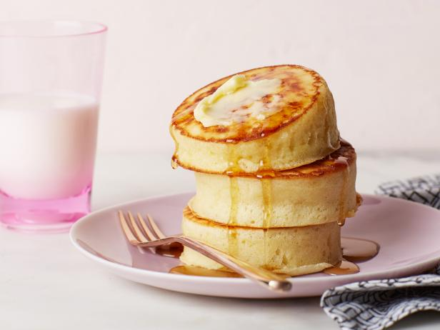

У этих высоких японских панкейков нежная текстура внутри, а снаружи они золотистые и поджаристые. Своей структурой блюдо напоминает пироги в японском стиле, отличающиеся легкостью и воздушностью. Теплые и вкусные пышные панкейки могут стать отличной идеей для позднего завтрака.
Японские панкейки |
|
Ингридиенты:
|
|
| Смотреть приготовление по рецепту | Источник |